<!DOCTYPE html>
<html lang="en" dir="rtl"></html>
<head>

    <meta charset="UTF-8"> 
    <link rel="stylesheet" href="Untitled-1.css">
   <meta name="viewport" content="width=device-width, initial-scale=1.0">
   
</head>
   
 <body>
    <header>
        <h2><a href="#" class="logo">نسيم</a></h2>
        <ul class="ul1">
            <li> <a href="index.html" class="active">الصفحة الرئيسة</a></li>
            <li> <a href="page3.html"  class="active">الكتب</a></li>
            <li> <a href="nor.html">مُدونة</a></li>
            <li> <a href="pag4.html">إستمع</a></li>
        </ul>
    </header>
   <section class="mine"></section> 
    <button class="sar"><a onclick href="https://url-shortener.me/97J2" target="_blank "><p> سرقة علوم المسلمين</p></a></button>
    <button class="sar">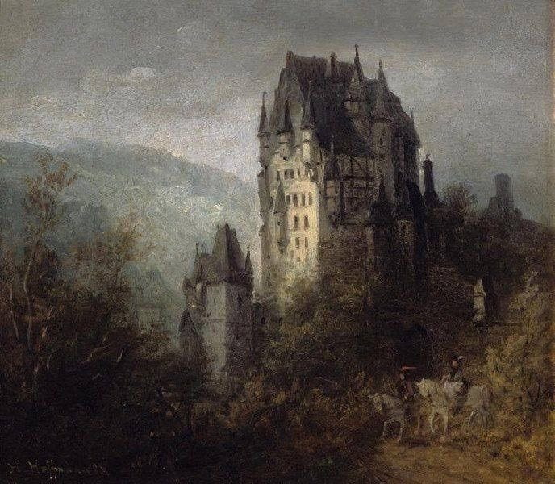<a onclick href="https://bkhalifa948.substack.com/p/e86" target="_blank "><p> وهم النضج</p></a></button>
    <button class="sar"><a onclick href="https://substack.com/home/post/p-171101351?source=queue" target="_blank "><p> التحث بلباقة</p></a></button>
    <button class="sar">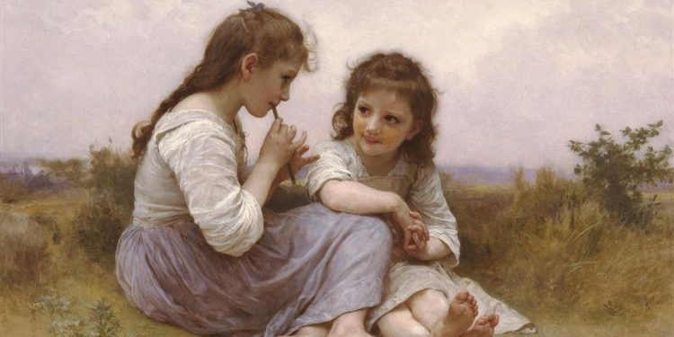<a onclick href="https://mana.net/maps-of-return-to-childhood/" target="_blank "><p> خرائط الطفولة</p></a></button>
    <button class="sar"><a onclick href="https://onlyme44.substack.com/p/765" target="_blank "><p> ذو العقل يشقى..</p></a></button>
    <button class="sar">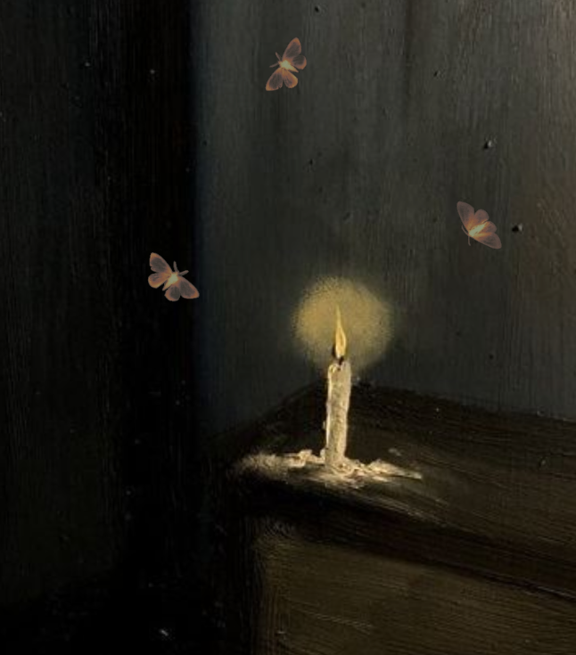<a onclick href="https://guthama.com/literary-consulation-for-our-surrows/" target="_blank "><p> مواساة أدبية لأحزاننا</p></a></button>
    <button class="sar"on>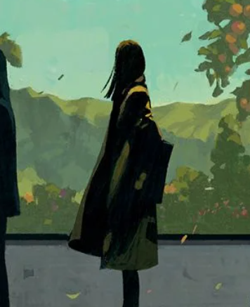<a onclick href="https://guthama.com/why-does-nostalgia-haunt-us/" target="_blank "><p>لماذا يلاحقنا الحنين؟</p></a></button>
    <button class="sar">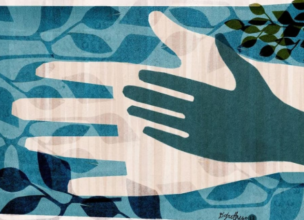<a onclick href="https://guthama.com/why-does-nostalgia-haunt-us/" target="_blank "><p>معنى أن تكون كبيرًا  </p></a></button>
    <button class="sar">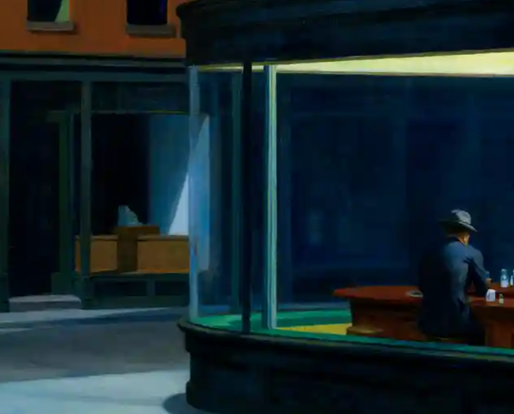<a onclick href="https://guthama.com/loneliness-and-belonging/" target="_blank "><p> عن الإنتماء</p></a></button>
    <button class="sar">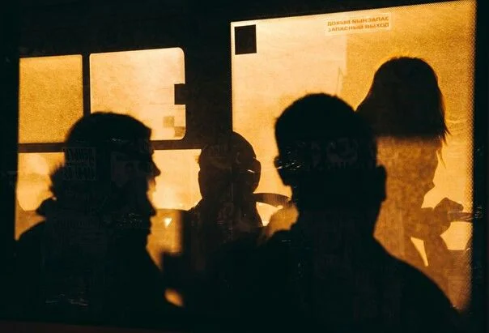<a onclick href="https://guthama.com/energy-suckers/" target="_blank "><p> الاصدقاء مصاصو الطاقة</p></a></button>
    <button class="sar">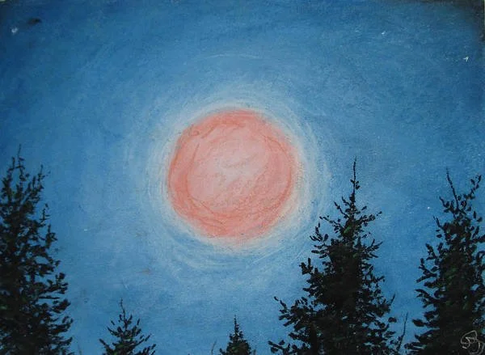<a onclick href="https://guthama.com/why-do-we-fear-loss/" target="_blank "><p> لماذا نخاف االفقد؟</p></a></button>
    <button class="sar">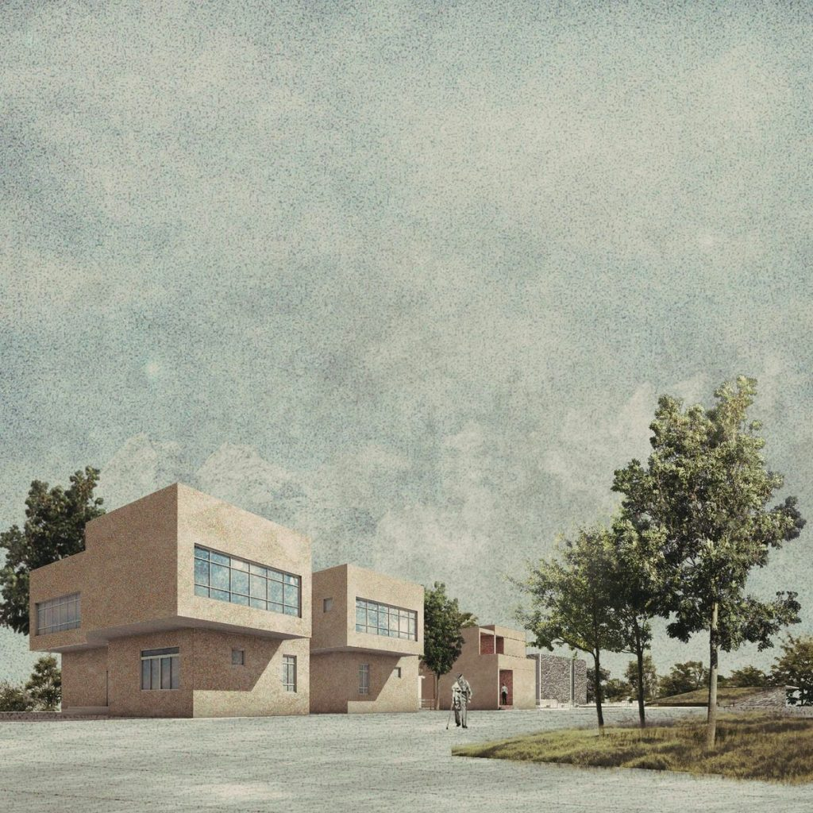<a onclick href="https://guthama.com/the-child-who-made-me-learn/" target="_blank "><p>علمني طفل </p></a></button>
    <button class="sar">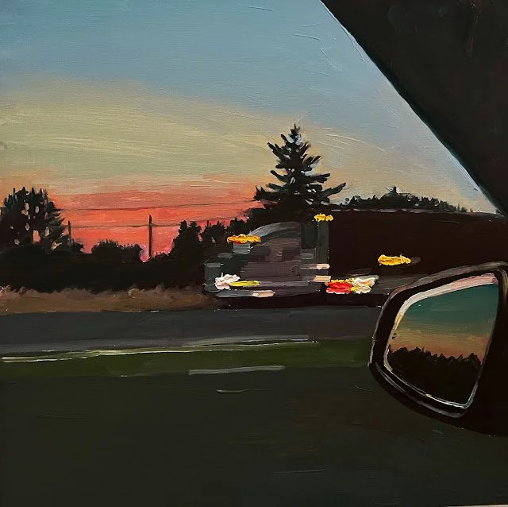<a onclick href="https://guthama.com/between-two-worlds/" target="_blank "><p>كيف تعيش بين عالمين؟</p></a></button>
    <button class="sar">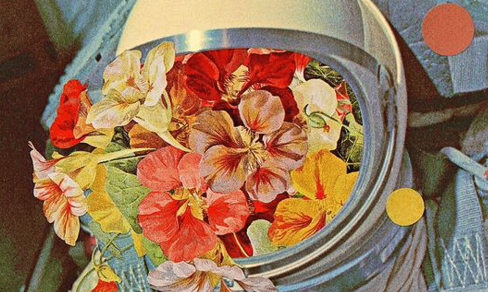<a onclick href="https://guthama.com/return-to-self/" target="_blank "><p> العودة الى الداخل</p></a></button>
    <button class="sar">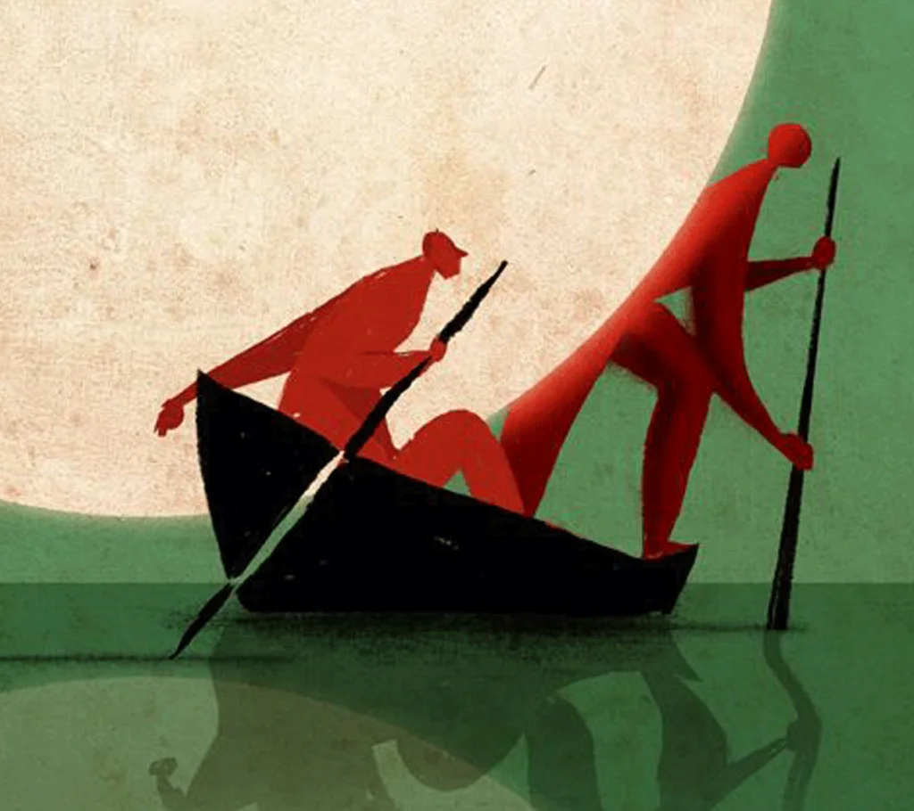<a onclick href="https://guthama.com/search-for-meaning/" target="_blank "><p>البحث عن معنى.. </p></a></button>
    </body>